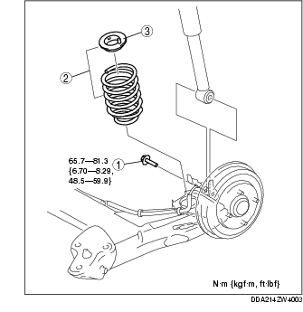

Rear coil spring removal/installation
1. Remove in the order indicated in the table.

2. Install in the reverse order of removal.
Rear Coil Spring Component Installation Note
1. Install the coil spring so that the end of the coil spring is aligned with the step of the upper spring seat.
2. Install the rear coil spring component so that the positioning pin on the upper spring seat is set to the hole on the body.